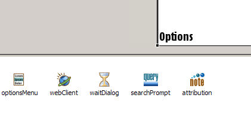

This example shows how to use the Carbide.c++ UI Designer for S60 to define the UI of an application and to implement the "real work" in the generated code.
The application consists of two screens. The main screen prompts the user to to initiate a search and displays the list of search results. The second screen displays the Yahoo! provided thumbnail image of the selected result.
Choose a link to read the following topics:
The initial project was created using the "C++ Application for S60" wizard with the "S60 3rd Ed. GUI Application with UI Designer" template.
Since the main screen for this application is the search results, this was the initially created view. Both the results view and the image view were created using the Avkon view switching architecture. Since the UI designer defaults to using the view switching architecture nothing needs to be done to enable it. The view switching architecture was used because it simplifies the work our application has to do, and in particular it make it easy to have distinct control and status panes for each of our screens.
The user interface definition for the search results view is in SearchResults.uidesign. Open it in the UI Designer.
When the Avkon view switching architecture is used the UI Design creates two separate C++ classes. A subclass of CAknView is the controller of the UI. It is referenced by the AppUi and is responsible for creating the user interface and handling commands. The other class is the actual UI container and varies based on the type of design. In this case it derives directly from CCoeControl and contains the CAknDoubleStyleListBox used here.
List boxes may be populated at design time with list item objects. This application does not use them because we populated the list dynamically based on the search results. The UI Designer displays the generic "no data" text rather than our custom "Start a search..." prompt because this was implemented using custom code in the CSearchResultsView::PopulateSearchResultsL() method.
In addition to the status pane, list box, and control pane, this design uses several non-layout objects.

Figure 1 - Non-layout objects used by example
The user interface definition for the image display view is in ImageContainer. Open it in the UI Designer.
This is a very simple view, containing only an image object. As with the list box, all our data is determined at run time, so we do not define any image information at design time. We've configured the control pane with just a Back button.
The title pane text is just a placeholder. It is populated with the image file name at run time, in the CImageContainerView::DoActivateL method.